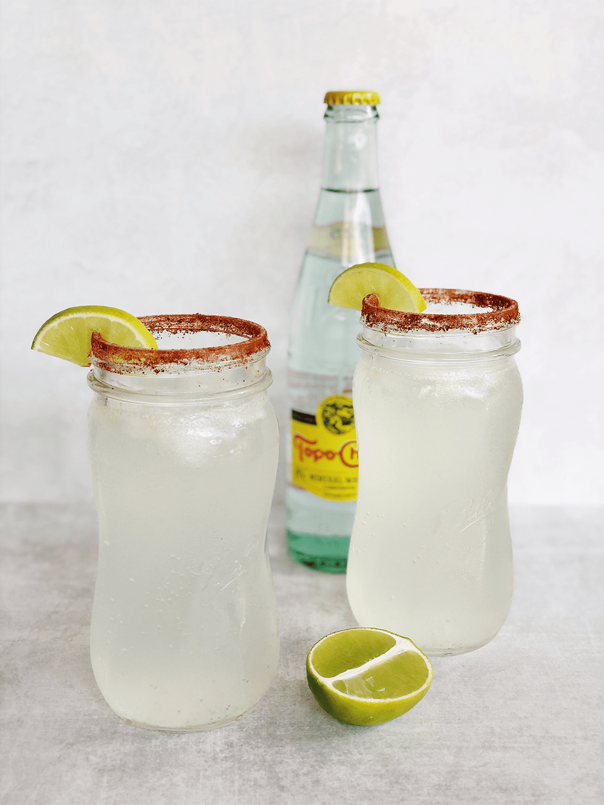

Texas Ranch Water

Description
Created by a Texas rancher as a way to beat the heat, this simple cocktail is mixed
right in the bottle - perfect for cookouts or any outdoor activity. Use Topo Chico
for the most authentic flavor and bubbly taste. Make sure your mineral water is ice
cold for best results!
Ingredients
- 1 bottle of sparking mineral water
- 2 fluid ounces blanco tequila
- 1 ounce fresh lime juice
- lime wedge, for garnish (optional)
Steps
- Drink about 3 ounces of mineral water out of the bottle. Slowly pour in tequila
and lime juice. Place thumb over top of bottle, and gently turn upside-down and
back up to combine.
- Serve with a lime wedge in the opening of the bottle, if desired.